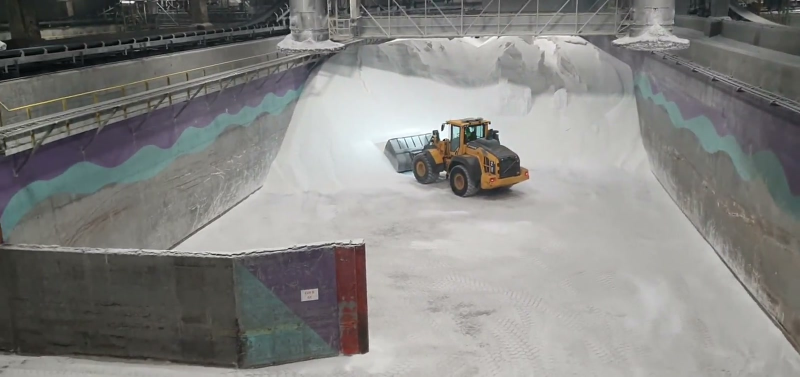

Fjernstyrt L120H
for Yara Porsgrunn.
Du blir værende.
Maskinen flytter på seg.
Hovedgrunnen til at Yara har valgt fjernstyring er ikke å spare folk. Det er å flytte deg ut av miljøet, støv, gass, vibrasjon og dårlig sikt, og inn i stasjonen.
Du beholder rollen som maskinfører. Du gjør den fra et trygt sted, med mer informasjon enn du har inne i hytta.
Etter alle tre faser skal du kunne sju ting.
- 01Forklare hvorfor Yara bruker fjernstyrt L120H, og hva som er forskjellig fra konvensjonell drift.
- 02Kjenne hvilke regelverk som gjelder for din drift.
- 03Gjennomføre sikker oppstart fra fjernstyrt operatør-stasjon.
- 04Resette E-stop og light barrier korrekt.
- 05Finne fram i HMI uten hjelp.
- 06Gjenkjenne de fem vanligste feil og handle på dem.
- 07Vite hvor du finner brukerhåndbok, Yara HMS og Hive support.
Tre regelverk styrer din drift.
Maskinen og sensorene.
av maskinen du kjenner
- 01Lidar. Måler avstand 360° rundt hele maskinen.
- 02Kameraer. Opp til sju, plassert for sikt og dokumentasjon.
- 03Kontrollskap. Tar styringssignaler fra stasjon til maskin.
- 04Sensorer. Hyd-trykk, motor-temp, drivstoff, posisjon.
- 05Antenne. Sender og mottar signaler over 5G og Rajant.
Nettverket binder alt sammen.
Operatør-stasjonen.
Din arbeidsplass.
operatør-stasjonen
- 01Operatør-stol. Justeres som i en hytte.
- 02Hovedskjerm med HMI.
- 03Kamera-skjermer. Tre standard, opp til sju ved behov.
- 04Joysticks for boom og tilt.
- 05Pedaler for gass og brems.
- 06Hive Stop. Rød fysisk knapp på pulten.
- 07Headset for samband med vakt.
Du trenger ikke huske alt.
Du trenger å vite hvor det står skrevet.
Light barriers og 3rd party stops.
Yara har egne light barriers, magnetiske sensorer og soner. Når de utløses, stopper vår maskin.
Yaras vakt rydder sonen. Du finner deres prosedyre på intranettet.
Vi underviser ikke Yaras egen prosedyre. Det er deres område, og du kjenner den best.
Når et 3rd party stop utløses, går maskinen i sikker stopp. Du ser i HMI hvilket system som har utløst stoppen.
Du venter på klarsignal fra Yara vakt. Når sonen er bekreftet trygg, resetter du fra HMI før drift gjenopptas.
All-grønt på sensor-bar er minimumskravet før du beveger maskinen igjen.
Oppstart, ende til ende.
- 01Pre-shift sjekk. Stasjon innlogget, alle skjermer aktive, headset koblet.
- 02Bekreftelse fra Yara vakt på samband.
- 03Light barrier aktiv og grønn.
- 04Internet cable koblet. Hive Mode-switch på rett innstilling.
- 05Maskin parkert i geofence (utgangspunkt).
- 06Start motor via HMI «Start».
- 07Verifiser sensor-status. Alle grønne. Operatør-klarsignal fra vakt.
Emergency stop og safety reset.
- 01 Hive Stop på pultenRød fysisk knapp · alltid tilgjengelig · går rett til maskin Manuell
- 02 Hard-stop på maskinenBrukes av vedlikehold · ikke deg · på siden av kontrollskap Manuell
- 03 Yara vakt på sambandVakt kan be deg stoppe · du følger umiddelbart Manuell
- 01Identifiser hvorfor stoppen kom. Noter i loggen.
- 02Verifiser at årsaken er ryddet. Visuelt fra kamera eller via vakt.
- 03Kontakt Yara vakt før du resetter.
- 04Reset i HMI: «Acknowledge» → «Reset».
- 05Vent fem sekunder, sjekk all-grønt på sensor-bar. Klarsignal fra vakt før drift.
HMI har fire soner.
Lær toppen først.
- Sensor-status
- Drivstoff
- Motor-temp
- Hyd-trykk
- Varsler
Fem feil du vil møte.
Slik ser et helt skift ut.
Fra du setter deg ned til du går hjem.

Du er ferdig med Fase 1.
Yaras HSE-rammeverk.
Yara HSE-leder Porsgrunn
navn · tlf · e-post TBC
Yara koordinator (Hive-leveranse)
navn · tlf · e-post TBC
Skift-vakt Porsgrunn
vakttelefon TBC
- SJASikker jobb-analyse
- LOTOLock-out / Tag-out
- Stop & ThinkYara HMS-modul
- Light barrier-prosedyreYara intranett
- Operasjonell risikoanalyseVersjon kommer fra Yara
- Skift-overleveringEgen prosedyre
Din installasjon.
- ·Maskin: Volvo L120H med Hive-retrofit. Installert dato TBC.
- ·Operasjonsområde: avgrenset av geofence. Konkret område TBC fra Yara.
- ·Gass- og støvsoner: følg Yara HMS-håndbok.
- ·Skiftbytte hver 8/12 time · egen prosedyre.
- ·24/7-drift · alltid vakt på sambandet.